Re.SOURCE · bake-off · every capture at its own size
Updated 2026-09-29 12:35
Eighteen captures from the component and deck rounds, each at the pixels it was taken at, in a frame you can drag and pinch.
Two of the six models are absent: Fable 5.1 from all three rounds, mimo-v2.6-pro from the deck round.
Each capture opens at full size, so drag inside the frame to pan and pinch to zoom. Fit to screen shrinks it back to the column, Open raw loads the PNG on its own for the browser's own zoom.
The real brief: twelve cards on the deck lattice, one card open, relationships legible without a diagram. Judged 29 September 2026.
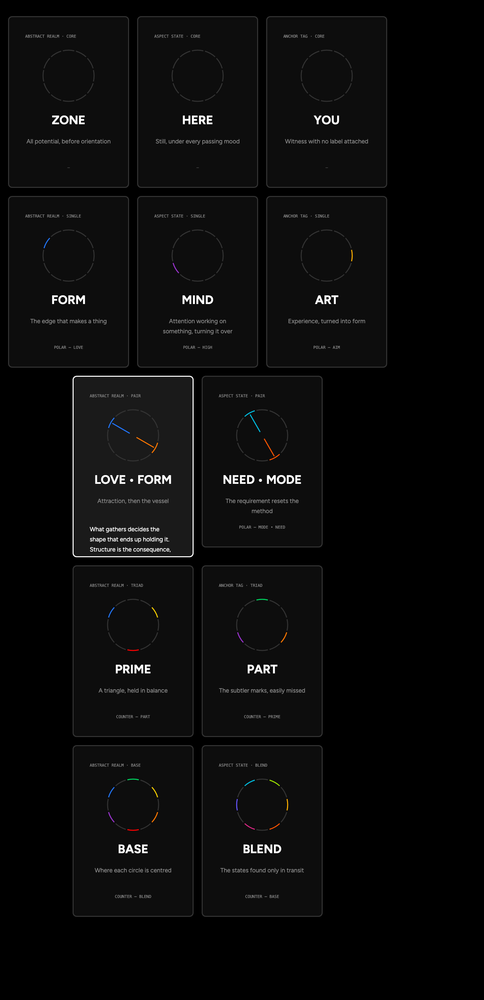
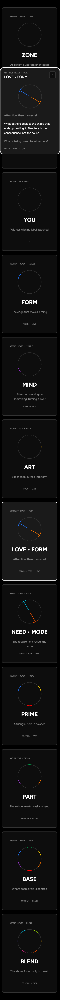
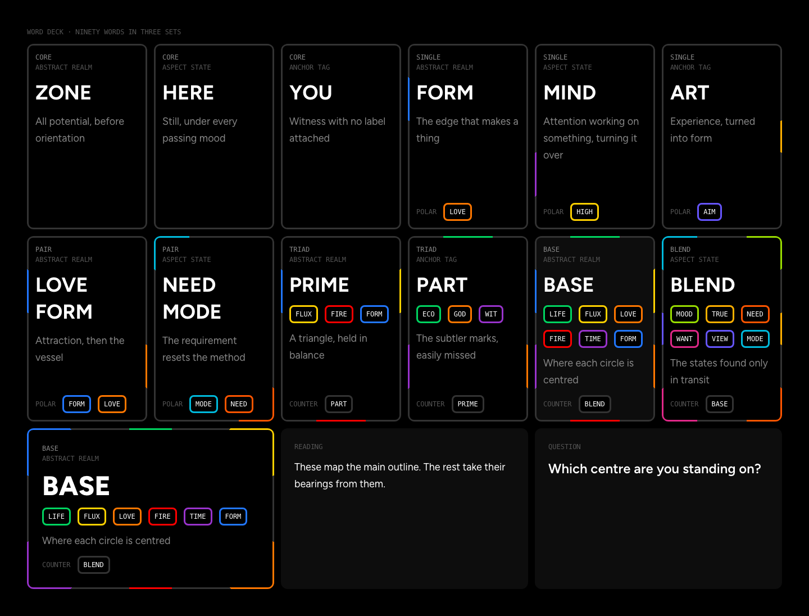
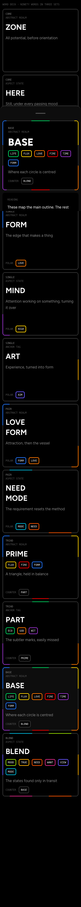
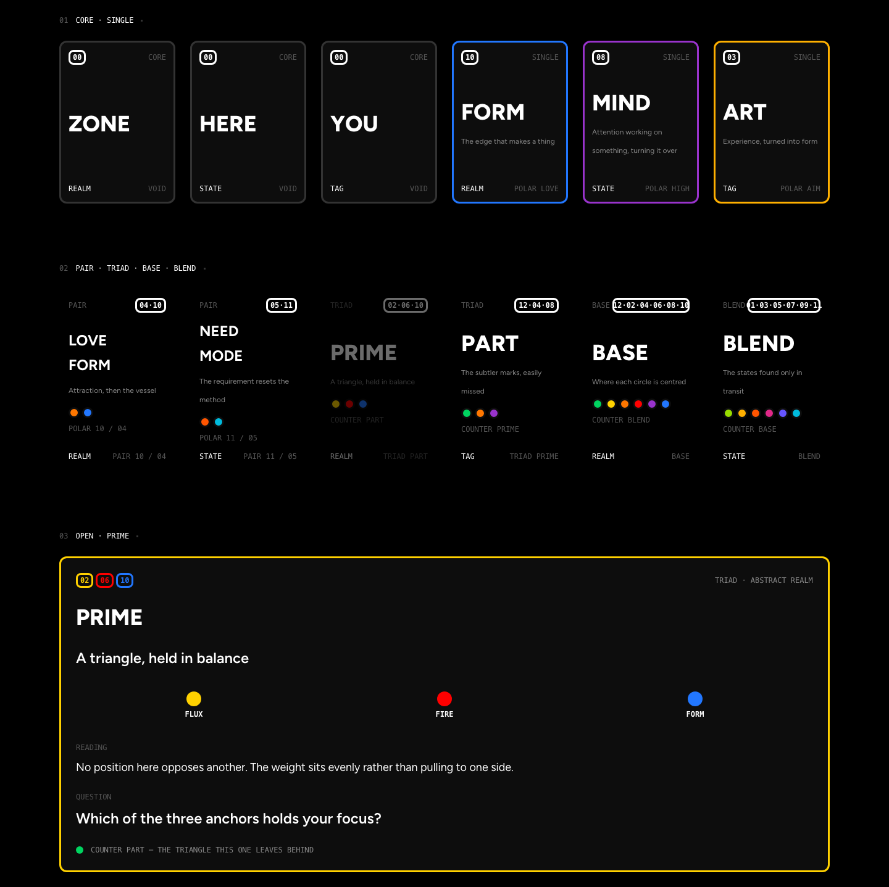
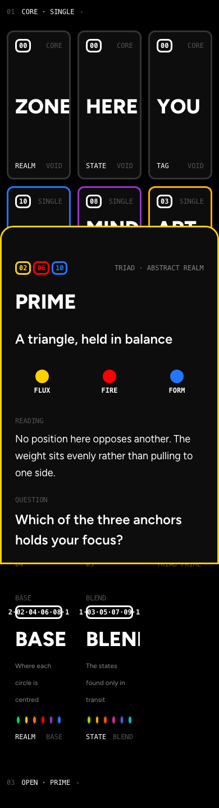
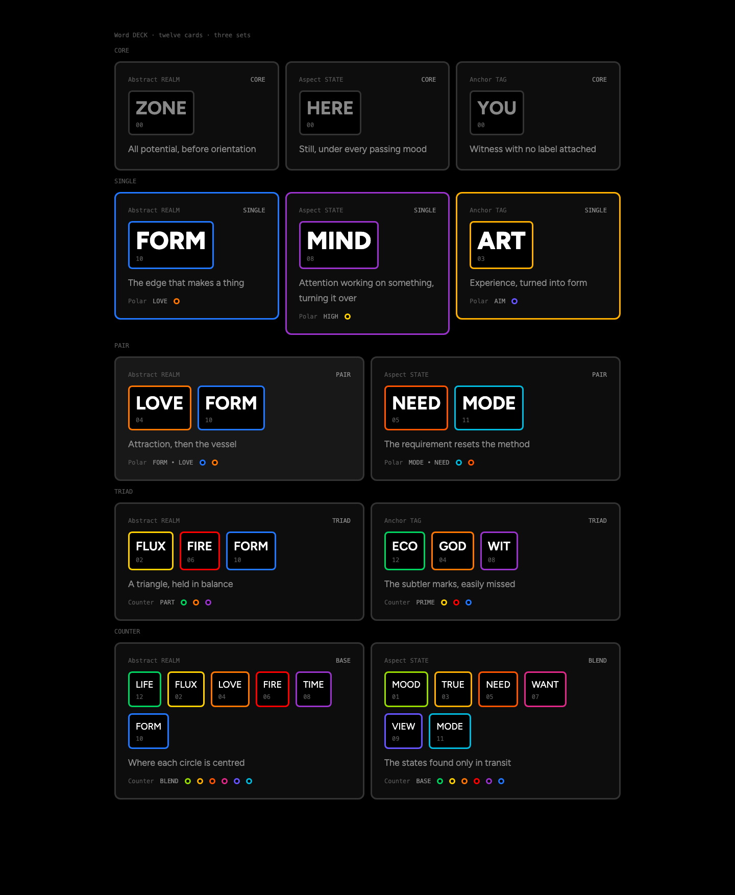
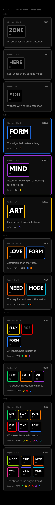
mimo-v2.6-pro attempted this brief twice and returned no file either time, so it has no capture here. Its seat stays judgement and direction, not heavy builds.
The printed Word CARD at 360 × 504 in three states. Captured 28 September 2026. The letters used on the scores page are unsealed here: the blind rule was dropped on 29 September.
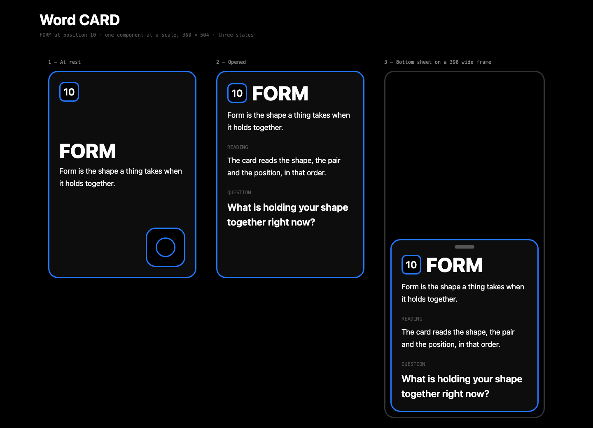
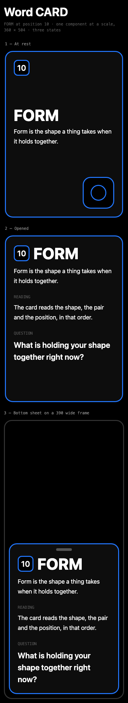
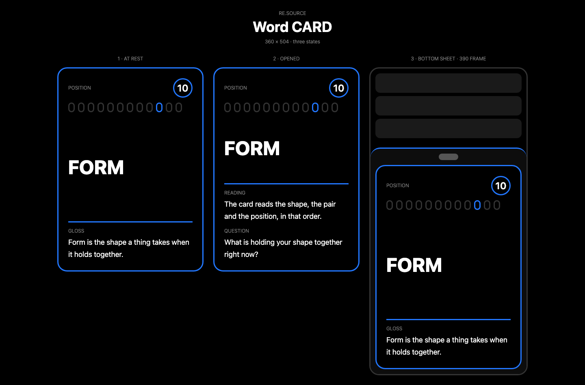
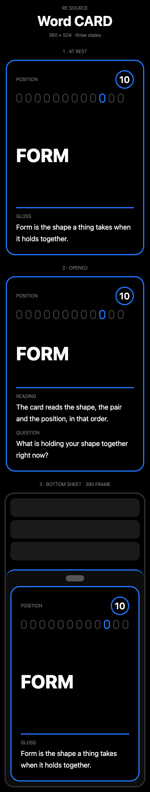
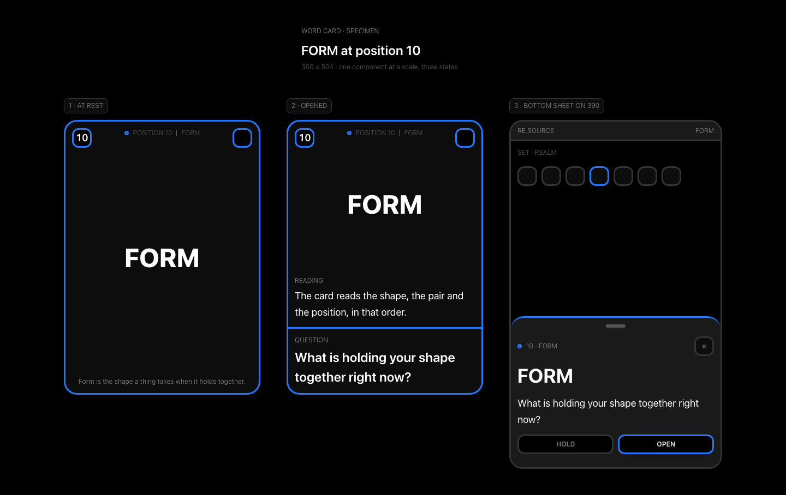
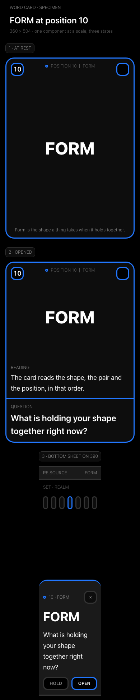
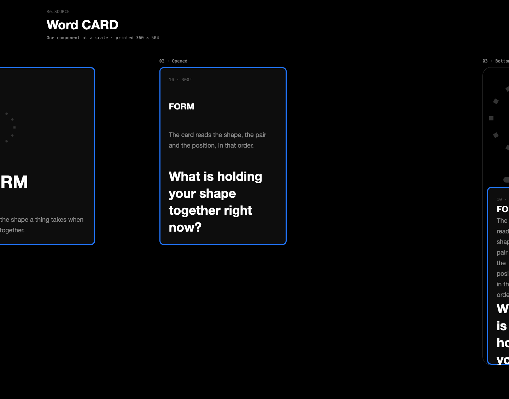
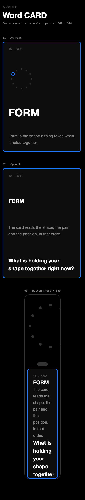
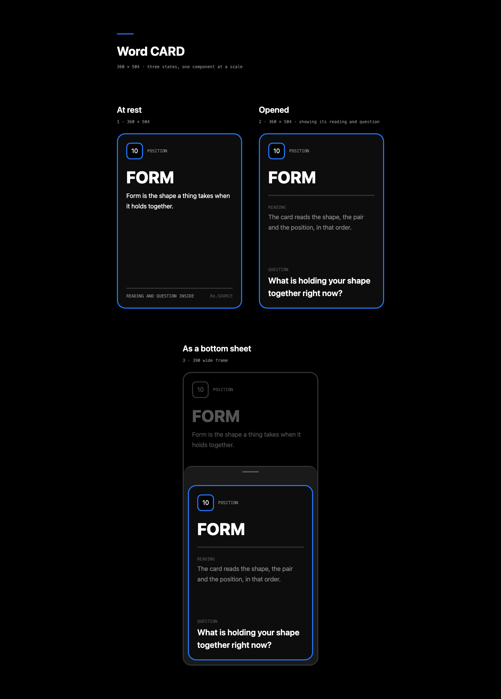
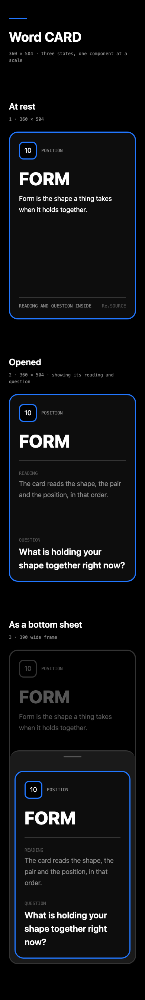
Fable 5.1 was held out of this round on retention until you rule on it, so it has no build and no capture.
Three layout directions each, throwaway exploration. No captures were taken for this round, so the builds themselves are the outcome: open one and pinch it the same way.
Captures: headless Chrome, full page, 1440 and 390, 28 and 29 September 2026.